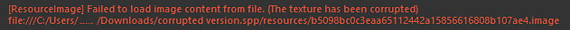
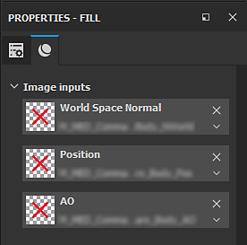

Corrupted textures in a project will cause failures during the saving process and can lead to projects being entirely corrupted and non-salvageable. However this can be manually fixed.
A corrupted resource manifests itself in the log when opening a project with an error message similar to this one in the log window :

The first step when an error appears it to find and identify the problematic resource.
In most cases the culprit is from the Mesh maps (baked textures). A quick way to verify that is to look at the mask generators in the layer stack.
Corrupted resources will look like this:

To replace a corrupted resource, all the references to it must be removed first. If the current is relatively small, this can be done manually.
However if the project spans across multiple texture sets or lots of layers, the Resource Updater can be helpful to locate the corrupted resource and replace it temporarily with another one.
Once all references to the corrupted resources are gone, perform a Clean of the project from the main menu (File > Clean).
This should remove all the now unused corrupted resources from the Project. It is possible to verify by browsing to the Project tab in the shelf to make sure all the problematic resources are gone.
After the cleanup, try saving the project :